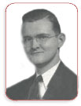

Mr Singspiration

Often called the dean of Gospel music, Dr. Al Smith, was a composer, Gospel soloist, song leader, lecturer, and an authority on church music, recording artist and music publisher. You may have seen or heard him on national radio or television, met him in a little white New England church where he was giving a concert, found him lecturing in a classroom to a group of college students, or leading a great audience of some 20,000 in singing at a conference in Knoxville, Tennessee.
Wherever you may have found Dr. Smith, you were sure to find a man who enjoyed the work God called him to do… to challenge hearts and lives with the “Singing Gospel” and tell the interesting histories of the songs and their writers as only he could tell them.
The fascinating life of Dr. Smith began on November 8, 1916 in a small Holland Dutch community in northern New Jersey where the news of the day reported that “Mr. and Mrs. Barney Smith” had become the proud parents of a baby boy who they named Alfred Barney Smith.
Alfred’s early years were filled with loving care from a Father and Mother who loved the Lord. Carrie Smith was a stay at home mother who was able to spend her time encouraging and teaching her son in the three “R’s”, reading, writing, and arithmetic, to which she added the fourth “R”, religion. At an early age Alfred learned the stories of David and Goliath, Daniel in the Lion’s Den, Noah and the Ark and best of all the story of Jesus. Though his mother had never received any extensive musical training she did love to sing. The first song she taught young Alfred was “Jesus loves me this I know, for the Bible tells me so”, soon followed by “Jesus Bids Us Shine”, and of course “America” and “Onward Christian Soldiers” for which he was given a little flag to wave as he marched around the room. These became his favorites. Feeling that music would be one of his most important ingredients in the home, a Symphonic Model phonograph manufactured by Thomas Alva Edison was purchased. With the phonograph came twenty-five records chosen by the company. At the time, little did the young parents realize how much their included records would affect the future of their young son.
Young Mother Smith had always loved the violin and in the record set were two records by a talented violinist named Albert Spaulding, a family member of the famous Spaulding family who manufactured athletic equipment. He played some of the beautiful compositions written by the world-renowned violinist, Fritz Kreisler, such songs as “The Old Refrain”, “Liebesfreud”, “Caprice Viennois”, etc. The young father and mother were thrilled with the recordings and four-year-old Alfred in the months and years ahead would learn to love them too.
We thought these early and interesting details deserved more than just a casual mention. It was these early decisions by his young parents that helped build the foundation and set the direction Alfred would go in the future.
When Alfred was eight and a half years of age his mother began to see that her son was developing an interest in the violin. During this time he rediscovered the old Edison records of Albert Spaulding and began to play them often. Observing this, she decided that it was time to start her son on the violin. She was fortunate in securing a Holland/Dutch immigrant named, Herman De Young, who proved to be a very good and honest teacher. Alfred made wonderful progress, in fact, when he reached the age of eleven his teacher advised his mother that he had taught his pupil all that he could and thought it was time for a new instructor. She found Roderick Meakle a special member of the faculty of the Juliard School of Music, who was also an associate of Leopold Auer, the world renown teacher of such violinists as Yoshua Heifitz, Isaac Stern, and Yehudi Menuhin. Under the teaching of Auer and Meakle, young Alfred made great progress, soon he was performing in concerts in various parts of the east including solos with various symphony orchestras.
At fourteen he was invited to a tent meeting in Hawthorne, New Jersey, where he accepted Christ as Savior. He was thrilled upon hearing the one hundred and fifty people in the tent singing “Saved, Saved, Saved” and “One Day.” That day he fell in love with Gospel music It was a love that never left him.
In 1930, he began playing on radio broadcasts. The station was WKBO, located in Jersey City, New Jersey. The program was called “the Old Fashioned Gospel Hour.” A young fellow by the name of George Beverly Shea was also on the broadcast. In 1933, Al met Wendell P. Loveless, Director of WMBI, and the radio voice of Moody Bible Institute. In 1934, Alfred enrolled at the Moody Bible Institute in Chicago, at the invitation of Mr. Loveless. He became a member of the WMBI staff, which more or less prepared him for his future ministry of radio, recording, and publishing of Gospel music.
In 1937, Alfred B. Smith graduated from Moody Bible Institute and immediately began as Minister of Music at The Church of the Open Door in Philadelphia, Pennsylvania, pastored by Dr. Merrell T. MacPherson. In the fall of 1938 the church loaned him to The Philadelphia School of the Bible – now The Philadelphia College of the Bible. C.I. Scofield who gave us the Scofield Reference Bible was the founder. Smith was teamed with W. Douglas Roe, a young and successful Pastor in New Jersey. It was during that year that he wrote “For God So Loved the World” after visiting the ninety-four year-old hymn writer George C. Stebbins. He was beginning an adventure in inspiration that kept him occupied for over sixty years.
In 1939 he was offered a scholarship to
Wheaton College (which he gratefully
accepted). His next three and half years
were busy ones. That first year he spent
each weekend in Chicago where he was the
choir director and song leader for a large
church pastored by Dr. Harry HagerIn the
fall of 1940 Billy Graham was a student at
Wheaton. Smith and Graham struck up an early
friendship and decided that they would  work
together as a team. Graham did the preaching
and Smith coordinated the music. As a result
of their ministry Singspirataion was born in
1941. God worked in a mighty way…in
Singspiration’s first two months of
sales the entire printing of five thousand
books was sold!On Valentines Day of 1942 Al
Smith married Catherine Barron at the
Wheaton Bible Church. The same year he
produced “Singspiration Two”, “Favorites”,
and choose Zondervan of Grand Rapids,
Michigan to be his distributor.
work
together as a team. Graham did the preaching
and Smith coordinated the music. As a result
of their ministry Singspirataion was born in
1941. God worked in a mighty way…in
Singspiration’s first two months of
sales the entire printing of five thousand
books was sold!On Valentines Day of 1942 Al
Smith married Catherine Barron at the
Wheaton Bible Church. The same year he
produced “Singspiration Two”, “Favorites”,
and choose Zondervan of Grand Rapids,
Michigan to be his distributor.
In 1943 he graduated from Wheaton and became the associate pastor of North Baptist Church of Flint, Michigan. Before leaving Wheaton, Billy Graham, Bev Shea, and Al presented their idea for Saturday night meetings in Chicago to Torrey Johnson, a well-known pastor and radio preacher in Chicago. Much to their dismay, they were turned down. However, God again showed Himself faithful as only a year later “Youth for Christ” was started in Chicago. God had worked another miracle in his life. After two years of a wonderful ministry in Flint, Smith felt lead of the Lord to resign from North Baptist and move back to Wheaton to devote his time to Singspiration and Youth for Christ. For the next ten years his days and nights were spent engaged in those two important ministries.
In 1947 his wife “Kay” became ill. After two operations and several months at the Mayo Clinic, she was diagnosed as having Multiple Sclerosis. During the next five years her illness made her more and more weak. Finally in 1953 he decided to move back east. First to his hometown of Ridgewood, New Jersey and then to Montrose, Pennsylvania. Montrose became the new headquarters for Singspiration and a new Christian radio station, WPEL. In 1957, John W. Peterson, Norman Johnson and Harold DeCou join the Singspiration staff. New publications including cantatas begin to cover not only America but Canada, England and other parts of the English speaking world. Though the ministry was growing by leaps and bounds, Catherine’s health continued to decline. In 1960 Catherine, after her long illness, went to be with her Savior for whom for years she longed to see. With Al she left two children; Barbara and Gordon.
In 1963 Singspiration moved to Grand Rapids and became part of Zondervan. Al remained in Pennsylvania. Free from the pressure of Singspiration he devoted most of his time to ministering in church meetings. He also kept quite busy with the writing and publishing of “Hymn Histories”, and the hymnal “Living Hymns.” “Living Hymns” was published in 1972 and “Hymn Histories” in 1982. These books were well received and Al Smith was back doing the thing he liked best.
In 1966 he married Nancy Wilbur from the
little community of Heart Lake Pennsylvania.
Al and Nancy raised four children,
Rebecca, David,
Sarah, and Jonathan. In 1985, to make sure
that their children would get Christian
teaching, they moved to Greenville, South
Carolina, where they attended Bob Jones
Academy. Here for the last fifteen years of
his life he was able to continue his
publishing. Though he battled cancer in his
later years, Dr. Smith was always going the
extra mile to share the love of God with
others whether in his home church, The
Greenville Christian Fellowship, or in any
of the countless other churches across the
nation that he and Nancy have
ministered in.
David,
Sarah, and Jonathan. In 1985, to make sure
that their children would get Christian
teaching, they moved to Greenville, South
Carolina, where they attended Bob Jones
Academy. Here for the last fifteen years of
his life he was able to continue his
publishing. Though he battled cancer in his
later years, Dr. Smith was always going the
extra mile to share the love of God with
others whether in his home church, The
Greenville Christian Fellowship, or in any
of the countless other churches across the
nation that he and Nancy have
ministered in.
Al was diagnosed with cancer in 1994. Despite this obstacle, he continued to travel and minister in song and story to countless numbers aided by his wife Nancy. Nancy’s role during these years greatly extended the ministry of Dr. Smith.
Dr. Smith’s final public concert was to an audience of over 2,000 people in the early summer of 2001. God had greatly used him to the very end. Dr. Alfred B. Smith went home to be with the Lord on August 9, 2001 with singing and praise to his Lord and Savior Jesus Christ.
Shortly before Dr. Smith passed away he shared his vision for the ministry to continue after his death. His sons, David and Jonathan, caught that vision and started Al Smith Ministries to keep the music of Alfred B. Smith available. God has allowed them to continue to offer the resources their father spent his life making. In 2009 Al Smith Ministries partnered with Striving Together Publications to be our exclusive distributor for “Living Hymns”. A new edition was completed that kept the original hymnal the same, updating the type setting and adding over sixty more songs to the book.